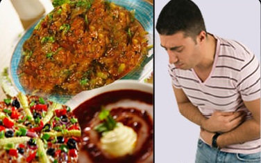

FOOD POISONING TREATMENT
CALL EMERGENCY # if:
- You think the food poisoning may be from seafood or mushrooms
- If the person is severely dehydrated
1. Control Nausea and Vomiting
- Avoid solid foods until vomiting ends. Then eat light, bland foods, such as saltine crackers, bananas, rice, or bread.
- 
- Sipping soda may help prevent vomiting.
- Don’t eat fried, greasy, spicy, or sweet foods.
- Don’t take anti-nausea or anti-diarrhea medication without asking your doctor. They may make some kinds of diarrhea worse. Your doctor may give you anti-nausea medication if you are at risk of being dehydrated.
2. Prevent Dehydration
- Drink clear fluids, starting with small sips and gradually drinking more.
- If vomiting and diarrhea last more than 24 hours, drink an oral rehydration solution.
3.When to Call a Doctor
- That lasts more than 3 days
- That happens after you eat seafood or mushrooms
- Accompanied by a fever
- With blood or dark stools
- With prolonged vomiting that prevents keeping liquids down
- With signs of severe dehydration, such as dry mouth, decreased urination, dizziness, fatigue, or increased heart rate or breathing rate